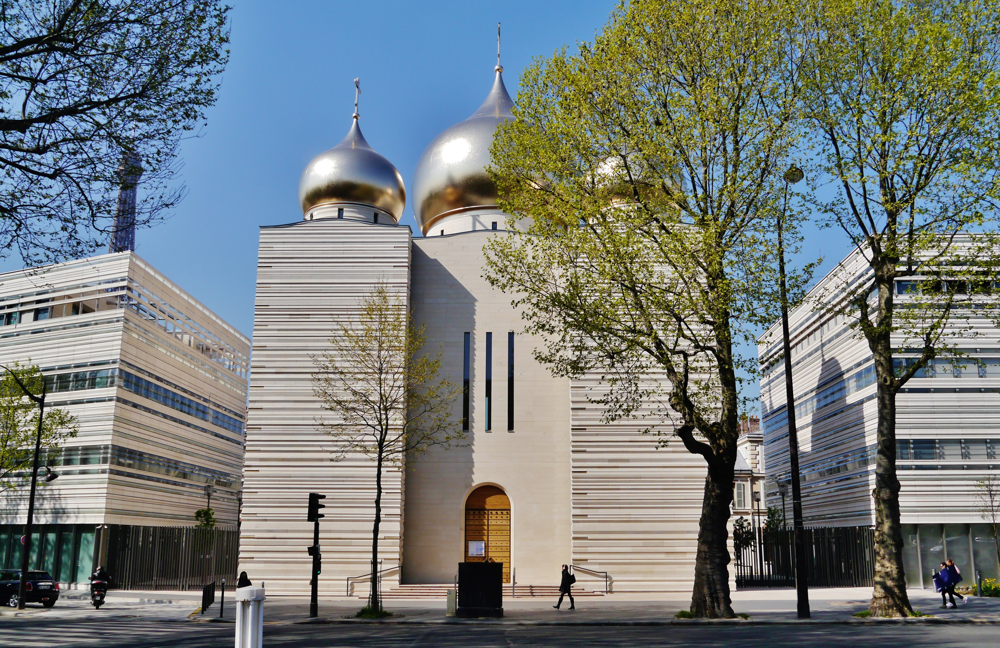

Postmodernism is a broad intellectual and cultural movement that emerged in the mid-to-late 20th century. It questions the idea that there is a single, objective truth or universal explanation of the world. Instead, postmodernism emphasizes plurality, ambiguity, fragmentation, and skepticism toward grand narratives.
1. Skepticism toward “grand narratives” The philosopher Jean‑François Lyotard famously defined postmodernism as “incredulity toward metanarratives.” Grand narratives are large explanations that claim to explain history or human progress—such as Enlightenment rationalism, Marxism, or religious teleology. Postmodern thinkers doubt that any single story can explain everything.
2. Relativity of truth and knowledge Postmodernism argues that what we call “truth” is often shaped by language, culture, power, and perspective. Thinkers like Michel Foucault examined how institutions and power structures shape knowledge and discourse.
3. Fragmentation and hybridity Postmodern works often mix genres, styles, and voices. They may include parody, pastiche, or self-referential elements that blur the boundary between high and low culture.
4. Intertextuality Texts reference or recycle other texts. Writers such as Umberto Eco and Thomas Pynchon frequently build narratives out of layered references to other cultural works.
5. Irony and playfulness Postmodern art and literature often treat serious themes with irony, humor, or parody rather than with solemn authority.
